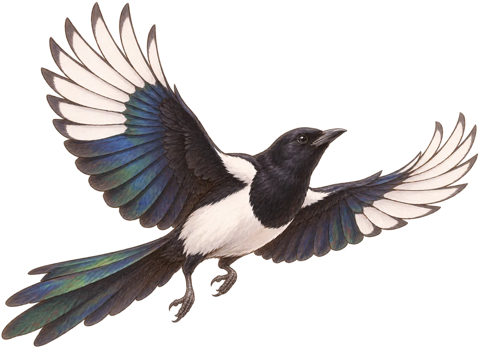

Blackveil Harmonic
Blackveil Harmonic Release2026.09.25Lyrics烏丸蓮司Music筧傑
Release2026.09.25Lyrics烏丸蓮司Music筧傑
Rule the Darkness
Blackveil Harmonic
良いヤツなんだ蓮司は不器用だけど

Ryosuke Kasagi
孤児院出身。面倒見がよく、蓮司の事業を支える右腕。売上の一部を孤児院へ寄付し、休日は子どもたちと遊ぶ。
孤児院出身。面倒見がよく、蓮司の事業を支える右腕。売上の一部を孤児院へ寄付し、休日は子どもたちと遊ぶ。
Release2026.09.25Lyrics烏丸蓮司Music筧傑
Blackveil Harmonic

カササギは光り物を拾い集める習性で知られ、欧州では《幸運を運ぶ鳥》とされてきました。佐賀県の県鳥でもあり、日本では一部地域で天然記念物に指定されています。